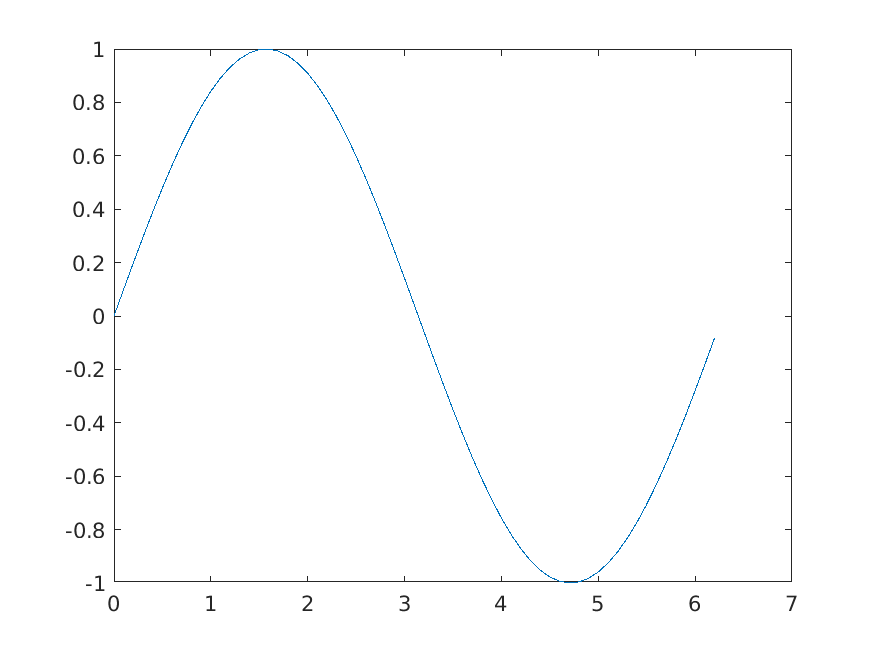

1 Overview
Org-mode and matlab-mode provide a very efficient and effective system for creating scientific documents which contain MATLAB code and/or Simulink models along with the results of these. The results of running MATLAB code or simulating Simulink models is placed into the org-mode file by org-mode using org babel. Org babel is org-mode's ability to execute source code within org-mode files and optionally insert the results back in to the org-mode file. You define source code in code blocks, e.g.
#+begin_src LANGUAGE <OPTIONS> <CODE> #+end_src
2 Example
With org-mode you can embed semantically colored code such as MATLAB within your document and
semantically edit it using "Org -> Editing -> Edit Source Example" menu or C-c '. For example,
here's a MATLAB enumeration class:
classdef WeekDays enumeration Monday, Tuesday, Wednesday, Thursday, Friday end end
You can use org-mode babel to evaluate MATLAB code blocks. For example, if you type C-c C-c in the
code block, org-mode will evaluate the code in the *MATLAB* session and insert the value of ans
just below the code block.
a=1+3+5+7; ans=a
16
You can also use org-mode babel evaluate MATLAB code blocks to plot and insert figures back in to this file. For example:
t=[0:.1:2*pi]; y=sin(t); plot(t,y);

3 HTML Export
You need the htmlize package to get coloring in HTML.
We set the "#+html_head_extra" properties above to configure CSS. We used M-x
org-html-htmlize-generate-css to create ./css/styles-from-org.css and added our customizations in
./css/styles.css.
4 Setup
The following is known to work with Emacs 27 which includes org-mode 9.3. It is also know to work with Emacs 27 and org-mode 9.6.1.
To use matlab-mode with org-mode, you need to configure org-mode for matlab-mode. See README.org to install matlab-mode.
We configure matlab-mode to use buffer name *MATLAB* and we alter org-mode to use this buffer by
adding the following to your ~/.emacs.
;;-----------------------------------------------------------------------------------------;; ;; org babel for matlab - make all matlab code blocks execute in the same *MATLAB* session ;; ;;-----------------------------------------------------------------------------------------;; ;; A better approach to setting org-babel-load-languages is to customize it: ;; M-x customize-variable RET org-babel-load-languages RET ;; However, we are doing this here to illustrate how matlab interacts with org (setq org-babel-load-languages '((emacs-lisp . t) (matlab . t))) (setq org-babel-default-header-args:matlab '((:session . "*MATLAB*"))) (defun matlab-org-session-advice (orig-fun &rest args) "Advice for org to reuse the *MATLAB* buffer" ;; ob-octave.el leverages both org-babel-matlab-emacs-link-wrapper-method and ;; org-babel-octave-wrapper-method when interacting with the *MATLAB* buffer. ;; Here we fix a couple items such as adding cd default-directory: (setq org-babel-matlab-emacs-link-wrapper-method (concat "\ cd('" default-directory "'); %s if ~exist('ans','var') ans=''; end if ischar(ans), fid = fopen('%s', 'w'); fprintf(fid, '%%s\\n', ans); fclose(fid); else, save -ascii %s ans end delete('%s') ")) (setq org-babel-octave-wrapper-method (concat "\ cd('" default-directory "'); %s if ~exist('ans','var') ans=''; end if ischar(ans) || isstring(ans), fid = fopen('%s', 'w'); fprintf(fid, '%%s\\n', ans); fclose(fid); else, dlmwrite('%s', ans, '\\t') end")) (apply orig-fun args)) (defun matlab-org-fixup-print (orig-fun session body result-type &optional matlabp) "Fixup figure print to make it work with MATLAB" ;; org 9.3 correctly does: print -dpng figure.png ;; org 9.6.1 incorrectly does: print -dpng "figure.png" ;; and thus 9.6.1 creates on disk a file name containing quotes which is incorrect, so this ;; advice fixes that. (setq body (replace-regexp-in-string "^\\(print -dpng \\)\"\\([^\"]+\\)\"" "\\1\\2" body t)) (funcall orig-fun session body result-type matlabp)) (defun org-export-dispatch-no-babel-advice (orig-fun &rest args) "Instruct babel to not evaluate code blocks (and hence no prompt) during export, e.g. conversion of org to say html." (let* ((org-babel-default-header-args (cons '(:eval . "never-export") org-babel-default-header-args)) (result (apply orig-fun args))) result)) (eval-after-load 'ox '(progn ;; Make C-c C-e `org-export-dispatch' work without prompting to evaluate code blocks (advice-add 'org-export-dispatch :around #'org-export-dispatch-no-babel-advice))) ;; org babel for matlab - make all matlab code blocks execute in the same *MATLAB* session (eval-after-load "org" '(progn (advice-add 'org-babel-octave-evaluate-external-process :around #'matlab-org-session-advice) (advice-add 'org-babel-octave-evaluate-session :around #'matlab-org-session-advice) (advice-add 'org-babel-octave-evaluate :around #'matlab-org-fixup-print)))
To try this using "stock" emacs, place the above in org-matlab-setup.el and use:
emacs -q -L /path/to/matlab-mode -l /path/to/matlab-load.el -l org-matlab-setup.el